How to Solve a
Rubik's Cube
2-Algorithm Method
(Beginner's Method)
Basic Terminology
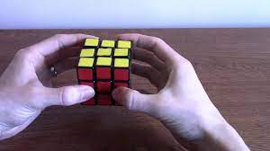
-
1. Orientation
When holding a cube, hold it as seen in the picture to the right. With one face of the cube towards you and a hand on either side.
-
2. Pieces
There are three types of pieces:
-
Centers - these remain fixed and serve as a guideline to solve the puzzle. On a solved cube, all the pieces of a particular colour surround the centre of that colour. On a scrambled cube, the centre represents the side on which the pieces of a particular colour are supposed to be.
-
Corners - As the name suggests, the corner pieces are located on the corners of the cube. Each piece is made up of three different colours. There are 8 corners on any cube shape, and thus there are 8 corners on the Rubik's cube.
-
Edges - The edges are the pieces between two corners. They are made up of two colours. There are 12 edges on the Rubik's cube.
-
3. Notation
The [] will notate the movement of the layer from the natural holding position for a better understanding:
- R - Right side clockwise [Right side upwards]
- R’ - Right side counter-clockwise [Right side downwards]
- L - Left side clockwise [Left side downwards]
- L’ - Left side counter-clockwise [Left side upwards] (Note: L and R may be confusing at first since the moves are opposite to each other)
- F - Front side clockwise
- F’ - Front side counter-clockwise
- U - Upper face clockwise
- U’ - Upper face counter-clockwise
2-Algorithm Method
We approach the cube layer by layer. The bottom layer is solved first, the middle layer next and the last layer towards the end, building the layer up on the previous one. This method is divided into 6 steps -
-
1. First layer
- White cross
- White corners
-
2. Second layer
-
3. Last Layer
- Yellow cross
- Yellow corners
- Completing the top layer
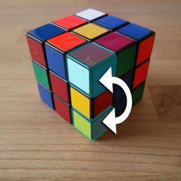
The two algorithms (set series of turns) we will be using through out this method are as follows:
- Right Algorithm - R, U, R', U'
- Left Algorithm - L', U', L, U
An example of the what the right algorithm does is pictured to the right. These will be refered to as Right Alg and Left Alg for the remainder of the instructions.
White Cross
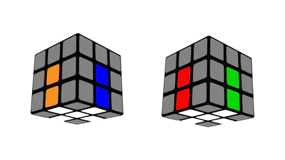
This is the simplest/most straight forward step. It is also the step in which there is no direction or easy way to complete it.
Your goal in this step is to get the cube to look like the picture. As in every white edge is in its correct location. Learn how pieces move around the cube in this time and try to do this on your own (you should be able to within a few minutes)
White Corners
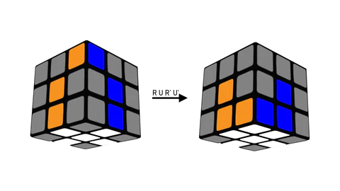
Once you have the white cross, it is now time to complete the first layer.
To do this do U turns until a white corner piece is above its desired location. Then, holding the cube so that the corner is in the front right of your perspective, perform the right alg until the piece is in it's spot!
If a white corner is in the first layer but in the wrong spot, simply use the right alg once to get it to the top layer.
Non-yellow edges
It is now time to complete the second layer by moving the non-yellow edge pieces into their places.
The algorithm we use here is different depending on where the piece needs to go, left or right of where it is, once lined up with the correct center piece.
- If the piece needs to go right: U, Right Alg, turn entire cube left, Left Alg
- If the piece needs to go left: U', Left Alg, turn entire cube right, Right Alg
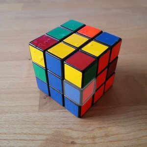
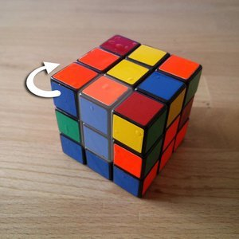
For example if the blue and red edge piece can be lined up with the blue center piece, it needs to go to the right. Example to the right:
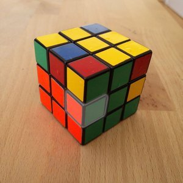
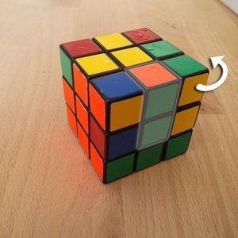
For example if the green and red edge piece can be lined up with the green center piece, it needs to go to the left. Example to the right:
Yellow Cross
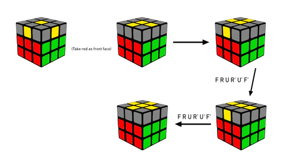
First two layers are done, now time for the yellow cross.
The yellow cross can be divided into three cases:
- Yellow Dot (no yellow edges touching the yellow center)
- Yellow L (two yellow edges form an L with the center)
- Yellow Line (two yellow edges form a straight line with the center)
The algorithm used for each case is the same,
F, Right Alg, F'
However, the initial positions vary. Identify the case on your cube and position it according to the corresponding position in the image. Simply repeat the algorithm until the cross is solved. !
If a white corner is in the first layer but in the wrong spot, simply use the right alg once to get it to the top layer.
Yellow Corners
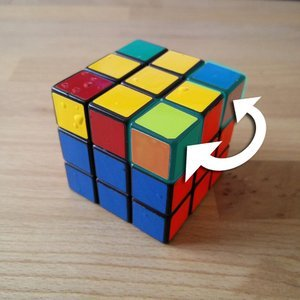
Now to match all the corner pieces in the top layer, We can swap two adjacent corners if they are on the right,
Right Alg x3, turn entire cube left, Left Alg x3
If we want to swap two corners diagonally, we have no other choice than to swap twice over adjacent corners.
When all corners are in their correct position, we flip the cube so that white faces up.
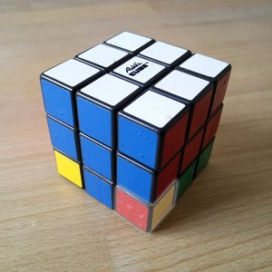
Let's now move on to the orientation of the corners. We position the cube so that the corner to be adjusted is at the bottom right. Now we repeat the Righty Alg until the yellow sticker of the corner faces down. Then we only do B' until a new corner is down right, and we perform the same thing again.
Don't be surprised if it messes up the entire cube! If all corners are properly adjusted, it should look like almost done.
Completeing the Top Layer
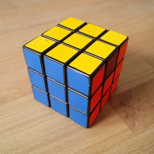
Everything should be solved now, except the yellow edges. There are two scenarios: Either one yellow edge is already correct or none. When we have one correct edge, we position the cube so that yellow is on top and the correct edge points forwards to us. Now we perform,
Right Alg, Left Alg, Right Alg x5, Left x5
Either the cube is solved now or we have to do the same thing again! If none of the edges are right, it doesn't matter which side is facing forwards. Perform the same alg just mentioned which will result in one solved side, then repeat.